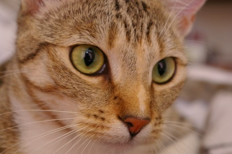

Pour les chats d'intérieur
Un appartement, mille terrains de jeu.
Un chat qui vit en intérieur a besoin de grimper, griffer, chasser et mâchouiller un peu de verdure. On a sélectionné des objets simples et naturels pour lui offrir tout ça, sans quitter votre salon.

🌿 Herbe à chat
Deux familles bien différentes : l'herbe à mâcher (avoine, orge, blé) qui aide à la digestion et à éliminer les boules de poils, et les plantes « euphorisantes » (cataire, matatabi, valériane, chèvrefeuille de Tartarie) qui excitent ou apaisent le chat pendant 5 à 15 minutes. Environ un chat sur trois ne réagit pas à la cataire : le matatabi ou le chèvrefeuille fonctionnent alors souvent mieux.
🌳 Arbres à chat
Grimper et observer d'en haut rassure le chat. Choisissez selon la place disponible : griffoir colonne pour les petits espaces, arbre XXL pour plusieurs chats, ou étagères murales pour gagner de la hauteur sans prendre de sol.
🧶 Jouets
10 à 15 minutes de jeu de chasse, deux fois par jour, suffisent à dépenser l'énergie d'un chat d'intérieur. Alternez les jouets pour garder l'effet de nouveauté.
💧 Fontaines & gamelles
Les chats boivent davantage une eau qui bouge : une fontaine aide à prévenir les problèmes urinaires. Côté gamelles, privilégiez la céramique ou l'inox, plus hygiéniques que le plastique.